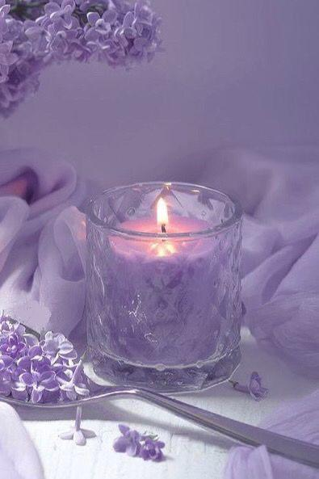

Purple aesthetics often evoke a sense of mystery, elegance, and creativity. The color purple is associated with royalty and luxury, making it a popular choice for creating sophisticated and glamorous visual compositions. In aesthetics, purple can be used to convey a sense of mysticism, spirituality, and introspection, drawing inspiration from its historical ties to nobility and the exotic allure of purple gemstones like amethyst. Purple aesthetics may incorporate a range of shades, from deep, royal purples to soft lavender hues, allowing for a versatile palette that can convey different moods and themes. Common elements in purple aesthetics include luxurious fabrics, floral motifs, dreamy landscapes, celestial imagery, and touches of gold or silver for added opulence. Overall, purple aesthetics invite viewers into a world of enchantment, creativity, and refined beauty.
